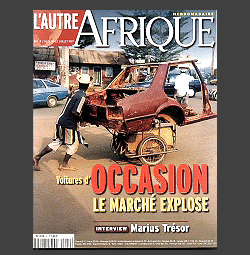

| AFRIQUE |
Congo |
Cote d'Ivoire |
Khayelitsha |
Namibie |
PUBLI-REPORTAGES |
|
Aristide Esso photographe reporter. Né au Cameroun, il se passionne pour la photographie en 1968 et en fait son métier comme une vocation. Ses images d'Afrique illustrent de nombreux ouvrages et articles de presse. Sa formation aux procédés traditionnelles de la photo s'affirme dans la qualité des clichés qu'il continue à réalisés au cours de ses reportages. Les expositions qu'il organise dans son atelier parisien ArtDéclic le rappellent à sa passion initiale. |
 |
|
|
Festival de Charleville 2006
|
Rencontres Musicales de Kiron ASSOCIATIONS
|
VOYAGE
|
|